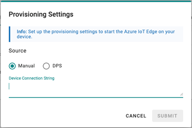
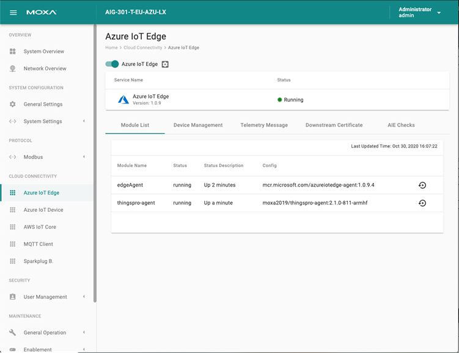
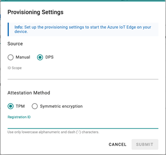
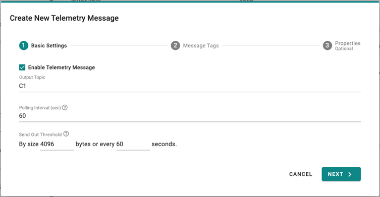
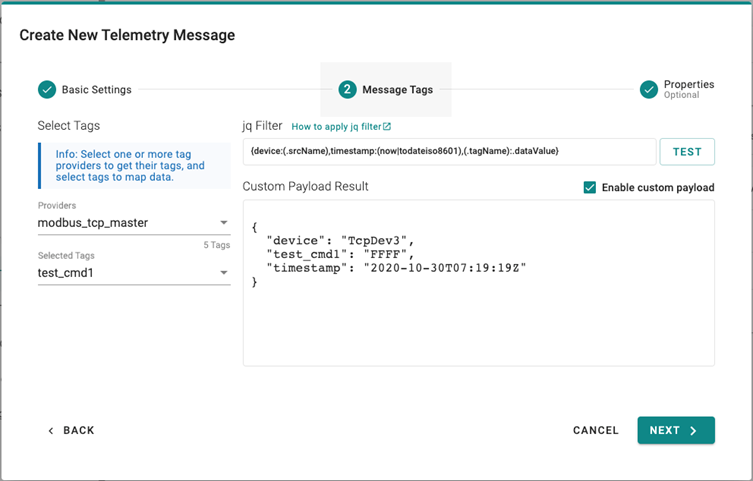
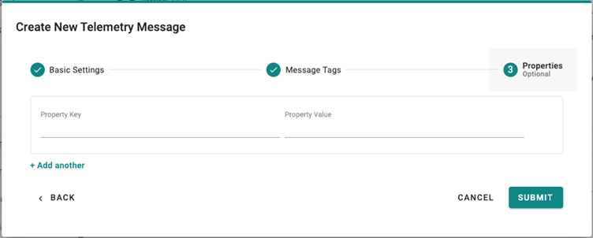
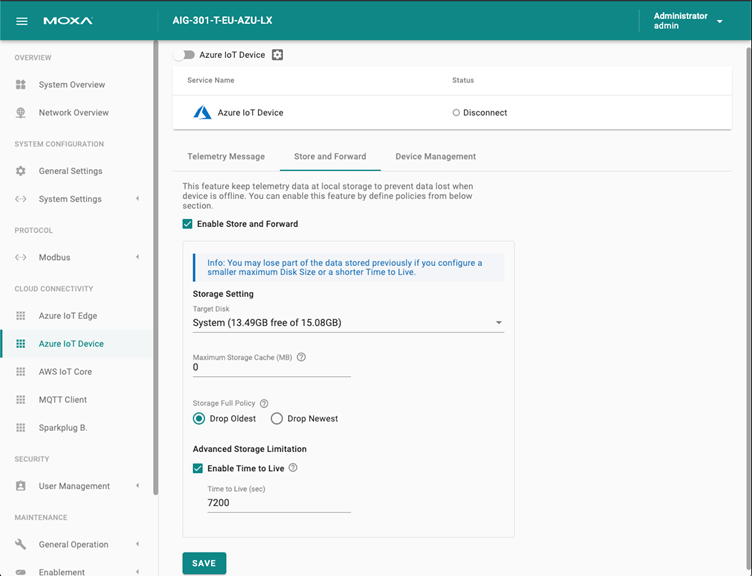
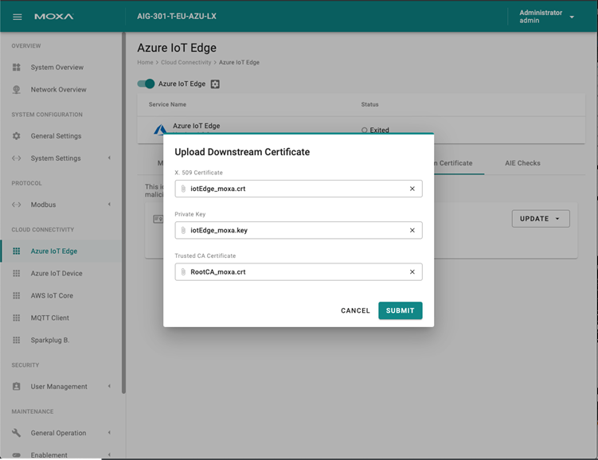

Azure IoT Edge
Click Azure IoT Edge. You can enable/ disable the Azure IoT Edge. You can enroll the device via manual setting or DPS (Device Provisioning Service).
Note that you will need to register an Azure account to manage the Azure IoT Edge service for your IoT application.
To create Azure IoT Edge connectivity manually, following the steps below:
- Enable Azure IoT Edge.
- Select Manual.
- Enter Device Connection String (created by Azure IoT Device).
- Click SUBMIT.


To create Azure IoT Edge connectivity via DPS, following the steps below:
- Enable Azure IoT Edge.
- Select DPS.
- Select TPM or Symmetric encryption (depends on what your device registered in Azure IoT Device).
- Enter Registration ID and Symmetric Key, if needed.
- Click SUBMIT

If you want to check Azure IoT Edge configurations, click Azure IoT Edge > AIE Checks and click CHECK. ThingsPro Edge checks the configurations and provides a result. More information about AIE Checks: https://github.com/Azure/iotedge/blob/master/doc/troubleshoot-checks.md
We recommend fixing the edgeAgent and edgeHub modules to version 1.0.10.3 from the Azure IoT Hub when using Azure IoT Edge on ThingsPro Edge V2.2.0.
Telemetry Message
The simplest message type for sending IoT device data to your IIoT applications is a telemetry message. To create a telemetry message, do the following:
- In the CLOUD CONNECTIVITY section, select a cloud service provider.
- Click on the Telemetry Message tab.
- Specify an Output Topic name.
- Enter the Polling Interval in seconds.
- Setup a threshold by file size (bytes) or time interval (seconds).
- Click NEXT.

7. Select tags from provides (e.g., Modbus Master).
8. (Optional) Enable custom payload by using the jq filter.
9. Click NEXT.
10. (Optional) Enter Property Key and Value.
11. Click SUBMIT.

 Device-to-Cloud (D2C) message policy allows you to transform default payload to your desired payload schema via the jq filter. For additional information, refer to the jq website (https://stedolan.github.io/jq/manual/).
Store and Forward
D2C messages can be cached in a specified location and sent to the cloud later. This feature will help you to keep the acquired data in a queue temporarily when the network between your IIoT Gateway and the cloud is disconnected and transmit them to its destination after the reconnection. To enable the function, click on the Store and Forward and select Enable Store and Forward. You can select a target disk and set a maximum storage cache, set a retention policy, and a TTL (Time to Live) value for the messages.

Device Management
Enabling this feature allows cloud service providers manage IoT devices remotely throughout Device Twin and Direct Method technology.
Downstream Certificate (available only for Azure IoT Edge)
To prevent your device from connecting to potentially malicious gateways (Azure IoT Edge inside), you can upload an X.509 certificate, Private Key and Trusted CA Certificate. These certificates can be generated via ThingsPro Edge in addition to your private certificate.
